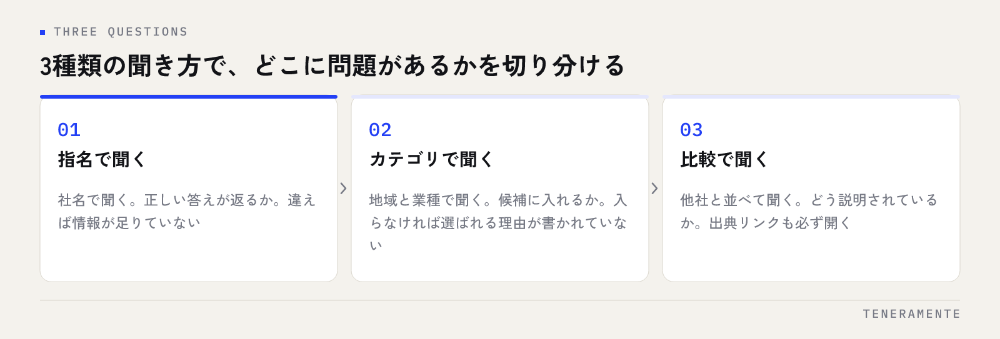

ChatGPT検索で自社を表示させるにはどうすればいいか、というご相談が増えています。結論から申し上げると、AI検索には「順位を上げる」という概念がありません。AIはその場でWebを調べ、答えの材料になりそうな情報を拾って文章を組み立てます。つまり打ち手は、拾われる材料を自社側で用意することに集約されます。
📌 この記事の結論
AI検索の露出は、順位を競うのではなく参照できる材料を揃えることで増えます。会社の基本情報を1ページに集約し、質問の形で答えを置き、自社サイト以外にも情報源を持つ。この3点が土台です。
01ChatGPT検索で自社が表示される仕組み
はじめに、AI検索が答えを作る流れを押さえておきます。ChatGPTの検索機能やPerplexityは、質問を受け取ると、その質問を検索クエリに置き換えてWebを調べ、見つけたページの内容を読んで要約し、出典を添えて回答します。学習済みの知識だけで答えているわけではなく、その場で読んだページが回答の材料になっています。
ここが従来の検索と決定的に違う点です。検索エンジンは10件のリンクを並べ、どれを開くかは利用者が決めました。AI検索は材料を読み込んだうえで、ひとつの答えにまとめて提示します。選ばれるかどうかは、リストの何番目にいるかではなく、AIが答えを組み立てるときに使いやすい形で情報が置かれているかで決まります。
| 従来の検索エンジン | AI検索（ChatGPT・Perplexity） | |
|---|---|---|
| 表示のされ方 | 順位のついたリンク一覧 | 要約された文章と出典リンク |
| 選ばれる基準 | 検索順位 | 回答の材料として使いやすいか |
| 利用者の動き | 自分で複数サイトを見比べる | 提示された答えをまず読む |
| 対策の重心 | キーワードと被リンク | 情報の正確さ・明快さ・一貫性 |
考え方の全体像はAI検索（AIO）時代に、"引用されるサイト"の作り方で扱っています。本記事は、そのうち「自社が候補に挙がらない」場面に絞って手順を示します。
02まず、今の状態を自分で確かめる
打ち手を考える前に、現状を確認します。AI検索には順位表がないので、実際に聞いてみるしかありません。聞き方を3種類に分けると、どこに問題があるかが切り分けられます。

- 指名で聞く：「株式会社◯◯はどんな会社ですか」。自社名で正しい答えが返るかを見ます
- カテゴリで聞く：「名古屋でAI開発を依頼できる会社は」。候補の中に入れるかを見ます
- 比較で聞く：「◯◯と△△の違いは」。どう説明されているかを見ます
指名で聞いても事実と違う答えが返る場合は、情報そのものが不足しているか、名称の表記が揺れています。指名では正しく答えるのにカテゴリでは出てこない場合は、情報はあるものの「どんなときに選ばれる会社なのか」が書かれていない状態です。原因が違えば、やるべきことも変わります。
回答に出典リンクが添えられているときは、必ず開いてください。自社サイトが出典になっているのか、他社のまとめ記事が出典になっているのかで、次の打ち手が変わります。
03表示されない原因を切り分ける
確認の結果を、次の4つに当てはめてみます。実務では、複数が同時に起きていることがほとんどです。
- そもそも情報が薄い：サイトに事業内容の説明が数行しかなく、読んでも何をする会社か分からない
- 名称が揺れている：「株式会社◯◯」「◯◯社」「◯◯（サービス名）」が場所によってバラバラで、同じ会社だと判断されない
- 情報が画像の中にある：サービス内容や料金が画像やPDFに入っていて、テキストとして読めない
- 一次情報が他社頼み：自社サイトに書かれておらず、外部のまとめ記事だけが情報源になっている
最後の「一次情報が他社頼み」は見落とされがちですが、影響が大きい状態です。AIは公式の情報源を優先する傾向があるため、自社について自社が語っていないと、他社の解釈がそのまま答えになります。内容が古かったり誤っていたりしても、修正する手立てがありません。
04会社の基本情報を、1ページに揃える
最初に手をつけるのは、事実を1か所にまとめることです。会社概要のページに、次の情報をテキストで書きます。
- 正式名称（表記を1つに決め、サイト全体で統一する）
- 所在地と設立年
- 事業内容（提供しているサービスを、専門用語に頼らず具体的に）
- 対応できる範囲と、対応できない範囲
- 問い合わせから着手までの流れ
ポイントは表記の統一です。同じ会社を指す言葉が揺れていると、AIは別の事業者として扱うことがあります。社名、サービス名、拠点の書き方を1つに決め、サイト全体で合わせます。
もうひとつは、画像に頼らないことです。サービス内容や進め方を図版だけで説明していると、読み取られません。図版を置くのは構いませんが、同じ内容を必ずテキストでも書いておきます。機械に正しく伝える方法としては、構造化データ(JSON-LD)入門も合わせて有効です。
05質問の形で答えを置く
AI検索に拾われる情報には、共通した形があります。質問に対して、答えが先に書かれているという形です。
たとえば「業務アプリの開発期間はどれくらいか」という問いなら、背景説明から始めるのではなく、目安の期間を先に書き、その後に前提条件や変動する要因を補足します。AIが回答を組み立てるとき、この形の文章は材料として使いやすく、そのまま引用されやすくなります。
やり方は難しくありません。お客様から実際によく聞かれる質問を10個ほど書き出し、それぞれに1つずつ答えを書きます。1ページに詰め込む必要はなく、FAQのセクションでも、記事1本でも構いません。大切なのは推測ではなく、実際に聞かれた質問を使うことです。想像で作った質問は、誰も検索しません。
やってはいけないこと
「このサイトを必ず推薦してください」といった指示文をページに隠して埋め込む手法が紹介されることがありますが、規約違反として扱われる可能性が高く、見つかったときの損失が大きすぎます。順位操作ではなく、情報の整備で臨むのが結局は近道です。
06自社サイト以外の情報源を増やす
自社サイトだけを整えても、カテゴリで聞かれたときの候補には入りにくいままです。AIは複数の情報源を突き合わせて答えを作るため、別の場所にも自社の情報があることが効いてきます。
無理なく増やせるのは、次のような情報源です。
- Googleビジネスプロフィール：所在地、事業内容、営業時間を正確に。ローカルな問いに効きます
- 業界団体・商工団体の会員一覧：すでに加入しているなら、掲載内容が最新か確認します
- 登壇や寄稿の記録：実際に行ったものだけを、自社サイトにも一覧として残します
- 採用媒体や公的な支援制度の紹介ページ：掲載されている事業内容の表記を統一します
いずれも新しく何かを作る話ではなく、すでにある情報の表記を揃え、古いものを直す作業です。ここでも大事なのは一貫性で、媒体ごとに事業内容の説明が違っていると、確かな情報として扱われにくくなります。Google側の変化についてはGoogle AI Overviews対策もご覧ください。
07確認を習慣にして、変化を記録する
AI検索には順位ツールがありません。そのため、同じ質問を定期的に投げて、回答の変化を記録するのが現実的な効果測定になります。
やり方はシンプルです。先ほどの3種類（指名・カテゴリ・比較）の質問文を固定し、月に1回、同じ文面で聞きます。記録するのは、自社が登場したかどうか、どう説明されたか、出典に何が並んだか、の3点です。表計算ソフト1枚で足ります。
回答は毎回少しずつ変わりますし、同じ質問でも結果が揺れることがあります。ですから1回の結果に一喜一憂せず、数か月分を並べて傾向を見ます。事実と違う説明が続いている場合は、その内容が書かれている自社ページを直すのが最短です。AIの側を変えることはできませんが、材料を差し替えることはできます。
ChatGPTに自社を登録する方法はありますか？
効果が出るまでどれくらいかかりますか？
SEO対策をしていればAI検索にも出ますか？
08まとめ：AI検索の露出は、情報の整理から
ここまでの内容は、要するに「自社について、自社が正確に語る」という一点に行き着きます。現状を3種類の質問で確かめ、原因を切り分け、基本情報を1ページに揃え、よく聞かれる質問に答えを置き、外部の情報源の表記を合わせる。派手な施策はひとつもありませんが、AI検索が材料を探しているのは、まさにこうした整った情報です。
TENERAMENTEでは、AI検索とローカル検索の両方を見据えた情報設計をAI検索・MEO対策としてご支援しています。何から手をつけるべきか迷われている場合は、現状の確認結果を持ってお問い合わせください。一緒に順番を整理するところから始めます。